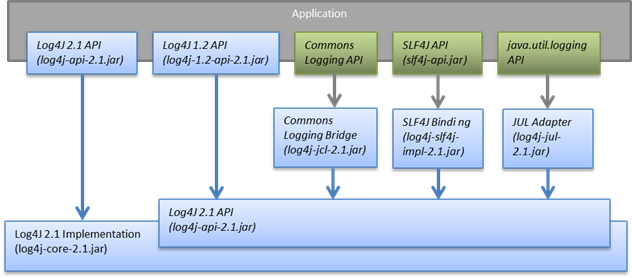
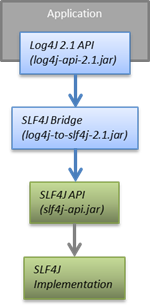

|
Frequently Asked Questions
Which JAR files do I need?You need at least the log4j-api-2.1 and the log4j-core-2.1 jar files. The other jars are necessary if your application calls the API of another logging framework and you want to route logging calls to the Log4j 2 implementation.  You can use the log4j-to-slf4j adapter jar when your application calls the Log4j 2 API and you want to route logging calls to a SLF4J implementation.  Some of the Log4j components have features with optional dependencies. The component page will have more detail. For example, the log4j-core component page has an outline of which log4j-core features have external dependencies. How do I specify the configuration file location?By default, Log4j looks for a configuration file named log4j2.xml (not log4j.xml) in the classpath.
You can also specify the full path of the configuration file with this system property: How do I configure log4j2 in code without a configuration file?You could use the static method #initialize(String contextName, ClassLoader loader, String configLocation) (see source code) in org.apache.logging.log4j.core.config.Configurator. (You can pass null for the class loader.) Be aware that this class is not part of the public API so your code may break with any minor release. How do I send log messages with different levels to different appenders?You don't need to declare separate loggers to achieve this. You can set the logging level on the AppenderRef element.<?xml version="1.0" encoding="UTF-8"?>
<Configuration status="WARN">
<Appenders>
<File name="file" fileName="app.log">
<PatternLayout>
<Pattern>%d %p %c{1.} [%t] %m %ex%n</Pattern>
</PatternLayout>
</File>
<Console name="STDOUT" target="SYSTEM_OUT">
<PatternLayout pattern="%m%n"/>
</Console>
</Appenders>
<Loggers>
<Root level="trace">
<AppenderRef ref="file" level="DEBUG"/>
<AppenderRef ref="STDOUT" level="INFO"/>
</Root>
</Loggers>
</Configuration>How do I debug my configuration?First, make sure you have the right jar files on your classpath. You need at least log4j-api and log4j-core. Next, check the name of your configuration file. By default, log4j2 will look for a configuration file named log4j2.xml on the classpath. Note the "2" in the file name! (See the configuration manual page for more details.) If the configuration file is found correctly, log4j2 internal status logging can be controlled by setting <Configuration status="trace"> in the configuration file. This will display detailed log4j2-internal log statements on the console about what happens during the configuration process. This may be useful to trouble-shoot configuration issues. By default the status logger level is WARN, so you only see notifications when there is a problem. If the configuration file is not found correctly, you can still enable log4j2 internal status logging by setting system property -Dorg.apache.logging.log4j.simplelog.StatusLogger.level=TRACE. How do I dynamically write to separate log files?Look at the RoutingAppender. You can define multiple routes in the configuration, and put values in the ThreadContext map that determine which log file subsequent events in this thread get logged to. You can use the ThreadContext map value to determine the log file name. <Routing name="Routing">
<Routes pattern="$${ctx:ROUTINGKEY}">
<!-- This route is chosen if ThreadContext has value 'special' for key ROUTINGKEY. -->
<Route key="special">
<RollingFile name="Rolling-${ctx:ROUTINGKEY}" fileName="logs/special-${ctx:ROUTINGKEY}.log"
filePattern="./logs/${date:yyyy-MM}/${ctx:ROUTINGKEY}-special-%d{yyyy-MM-dd}-%i.log.gz">
<PatternLayout>
<pattern>%d{ISO8601} [%t] %p %c{3} - %m%n</pattern>
</PatternLayout>
<Policies>
<TimeBasedTriggeringPolicy interval="6" modulate="true" />
<SizeBasedTriggeringPolicy size="10 MB" />
</Policies>
</RollingFile>
</Route>
<!-- This route is chosen if ThreadContext has no value for key ROUTINGKEY. -->
<Route key="$${ctx:ROUTINGKEY}">
<RollingFile name="Rolling-default" fileName="logs/default.log"
filePattern="./logs/${date:yyyy-MM}/default-%d{yyyy-MM-dd}-%i.log.gz">
<PatternLayout>
<pattern>%d{ISO8601} [%t] %p %c{3} - %m%n</pattern>
</PatternLayout>
<Policies>
<TimeBasedTriggeringPolicy interval="6" modulate="true" />
<SizeBasedTriggeringPolicy size="10 MB" />
</Policies>
</RollingFile>
</Route>
<!-- This route is chosen if ThreadContext has a value for ROUTINGKEY
(other than the value 'special' which had its own route above).
The value dynamically determines the name of the log file. -->
<Route>
<RollingFile name="Rolling-${ctx:ROUTINGKEY}" fileName="logs/other-${ctx:ROUTINGKEY}.log"
filePattern="./logs/${date:yyyy-MM}/${ctx:ROUTINGKEY}-other-%d{yyyy-MM-dd}-%i.log.gz">
<PatternLayout>
<pattern>%d{ISO8601} [%t] %p %c{3} - %m%n</pattern>
</PatternLayout>
<Policies>
<TimeBasedTriggeringPolicy interval="6" modulate="true" />
<SizeBasedTriggeringPolicy size="10 MB" />
</Policies>
</RollingFile>
</Route>
</Routes>
</Routing> |